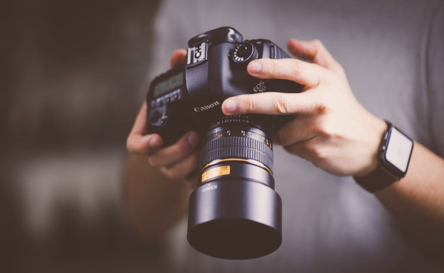

Stages
L'association propose à ses adhérents des stages photos pour les débutants au plus confirmés.
L'ensemble de ces stages se dérouleront dans le Doubs et sont réalisés par des bénévoles de l'association.
L'ensemble de ces bénévoles sont des photographes professionnels.
